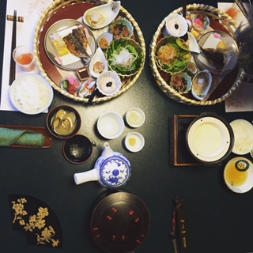

Kaiseki: The Art of Traditional Japanese Cuisine
Kaiseki refers to a traditional, multi-course Japanese dinner in which each course is small and artfully presented. Kaiseki meals are often comprised of the finest and freshest ingredients local to a particular region. As with most regional cuisines, kaiskei can be expensive.

Image credit: Kristen Boffi
Below are some examples of the types of food you may enjoy in a kaiseki experience:
| Food | Description |
|---|---|
| miso soup | A traditional, simple miso broth with tofu and seaweed |
| sashimi | Thinly sliced raw fish presented without rice or other accompaniments |
| shabu shabu | Thinly sliced raw beef, fish, or shellfish for cooking in a simple broth flavored with fresh vegetables and tofu |
| tsukemono | Preserved Japanese vegetables, or Japanese pickles |
Where to Find It
Kaiseki is most commonly served at ryokan, or traditional Japanese inns. The price point for ryokan can vary, but you can expect a similar experience at each one that includes the following:
- Simple accommodations that include tatami floors and futons that are laid out on the floor just prior to sleeping
- On-site gender-segregated bathing facilities where residents will bathe and relax upon arrival to the ryokan and prior to the meal
- Yukata, or a casual cotton kimono provided to guests to wear during their stay at the ryokan
As with many experiences of Japanese culture, etiquette is of the utmost importance when staying in a ryokan and enjoying kaiseki.